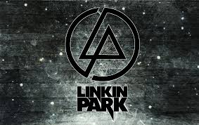
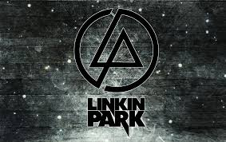

Rock
Linkin Park
skład:
- Chester Bennington
- Rob Bourdon
- Brad Delson
- Joe Hahn
- Mike Shinoda
best fanki:
- Kasia
- Jagoda
- Madzia
- Ola
- Gosia

tytuły piosenek:
Tytuł piosenki
Data wydania
Numb
2004
Castle of Glass
2011
New Divide
2007
Burn it Dovn
2009
In the End
2007
Faint
2007
What I've Done
2007

Pierwotnie Linkin Park nosił nazwę Xero. Mniej więcej w czasie, gdy Chester Bennington odszedł od Grey Daze (obecnie Waterface) i dołączył do LP, odszedł ze składu Mark Wakefield (wokalista), nazwę zespołu chciano zmienić na Hybrid Theory. Idea tej nazwy polegała na zaznaczeniu tego, że Kalifornijczycy grają muzykę nietypową – hybrydę metalu, elektroniki, rapu, itd. Nazwa okazała się jednak zastrzeżona przez inny zespół, chciano uniknąć problemów prawnych, w związku z czym zrezygnowano z niej (choć nie do końca, biorąc pod uwagę, że tak nazwali pierwszy album). Następnie rozważano różne inne nazwy dla zespołu m.in.: 'Clear' (ich ulubiona), 'Probing Lagers', 'Platinum Lotus Foundation', 'Ten PM Stocker' (od ulicy Stocker Street, gdzie mieszkał Mike i gdzie członkowie zespołu mieli próby, jednak ściany mieszkania były bardzo cienkie i o godzinie 10 wieczorem sąsiedzi zaczynali protestować). W końcu zdecydowali się na Lincoln Park (wziętą od Parku Lincolna w Santa Monica, gdzie mieszkał Chester), ale i ta nazwa była już zajęta, przez zespół z Australii, który posiadał już nawet domenę internetową. Ostatecznie, aby nie zmieniać po raz kolejny całkowicie nazwy zespołu, muzycy zmienili ją nieznacznie na Linkin Park.
skład:
- Chester Bennington
- Rob Bourdon
- Brad Delson
- Joe Hahn
- Mike Shinoda
best fanki:
- Kasia
- Jagoda
- Madzia
- Ola
- Gosia
tytuły piosenek:
| Tytuł piosenki | Data wydania |
|---|---|
| Numb | 2004 |
| Castle of Glass | 2011 |
| New Divide | 2007 |
| Burn it Dovn | 2009 |
| In the End | 2007 |
| Faint | 2007 |
| What I've Done | 2007 |

Pierwotnie Linkin Park nosił nazwę Xero. Mniej więcej w czasie, gdy Chester Bennington odszedł od Grey Daze (obecnie Waterface) i dołączył do LP, odszedł ze składu Mark Wakefield (wokalista), nazwę zespołu chciano zmienić na Hybrid Theory. Idea tej nazwy polegała na zaznaczeniu tego, że Kalifornijczycy grają muzykę nietypową – hybrydę metalu, elektroniki, rapu, itd. Nazwa okazała się jednak zastrzeżona przez inny zespół, chciano uniknąć problemów prawnych, w związku z czym zrezygnowano z niej (choć nie do końca, biorąc pod uwagę, że tak nazwali pierwszy album). Następnie rozważano różne inne nazwy dla zespołu m.in.: 'Clear' (ich ulubiona), 'Probing Lagers', 'Platinum Lotus Foundation', 'Ten PM Stocker' (od ulicy Stocker Street, gdzie mieszkał Mike i gdzie członkowie zespołu mieli próby, jednak ściany mieszkania były bardzo cienkie i o godzinie 10 wieczorem sąsiedzi zaczynali protestować). W końcu zdecydowali się na Lincoln Park (wziętą od Parku Lincolna w Santa Monica, gdzie mieszkał Chester), ale i ta nazwa była już zajęta, przez zespół z Australii, który posiadał już nawet domenę internetową. Ostatecznie, aby nie zmieniać po raz kolejny całkowicie nazwy zespołu, muzycy zmienili ją nieznacznie na Linkin Park.